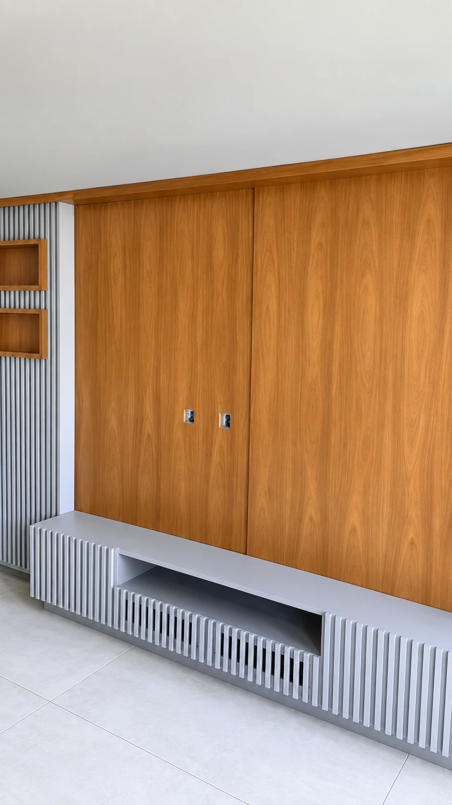
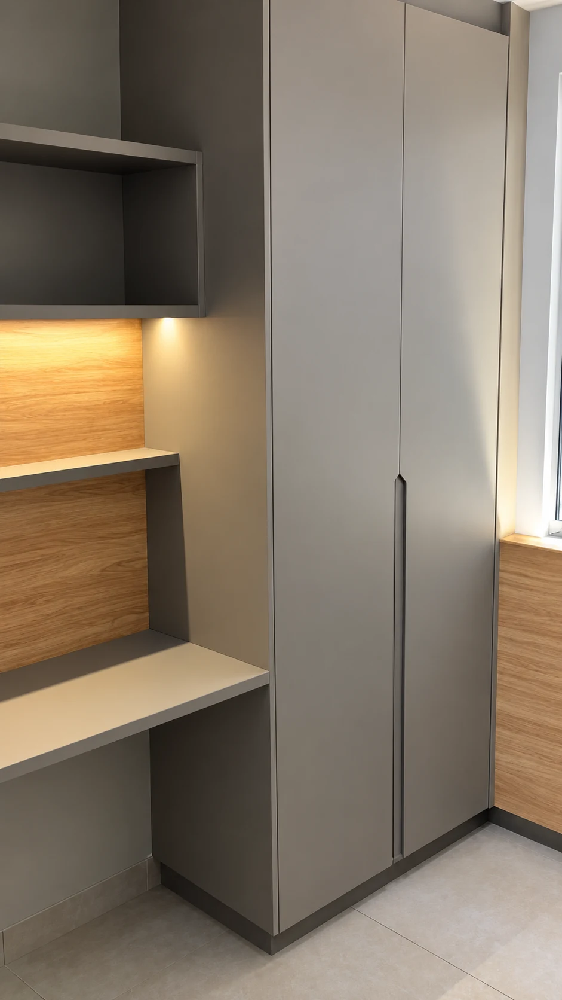
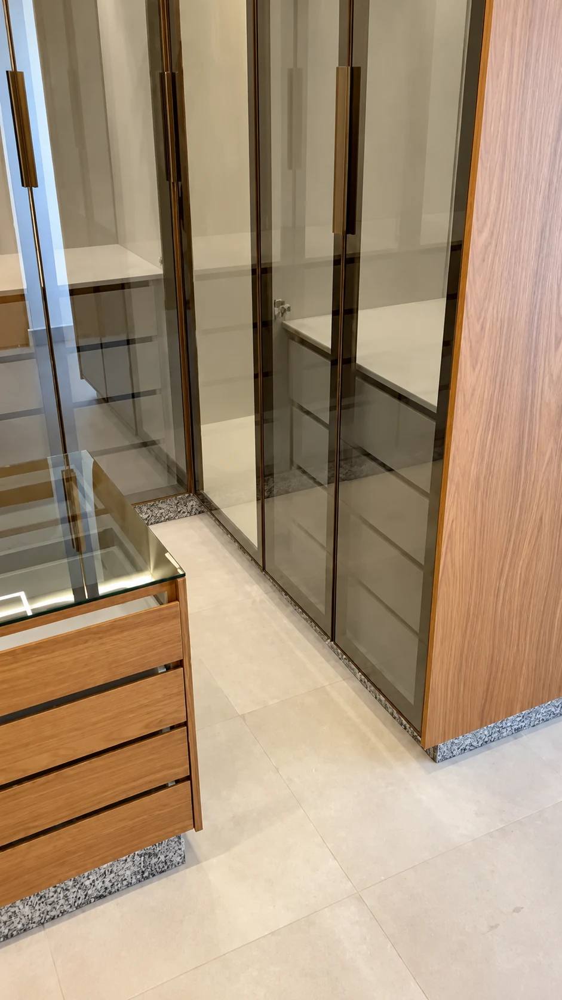
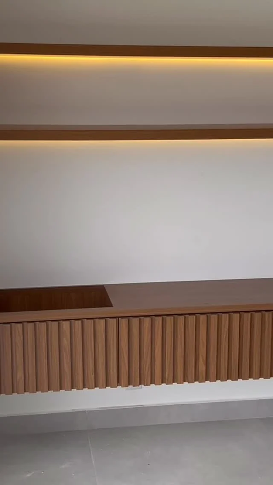
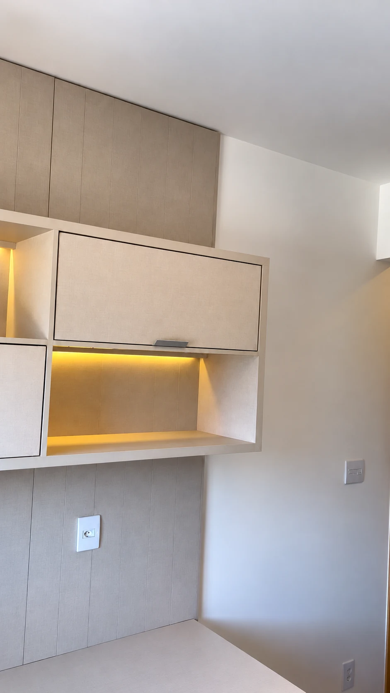
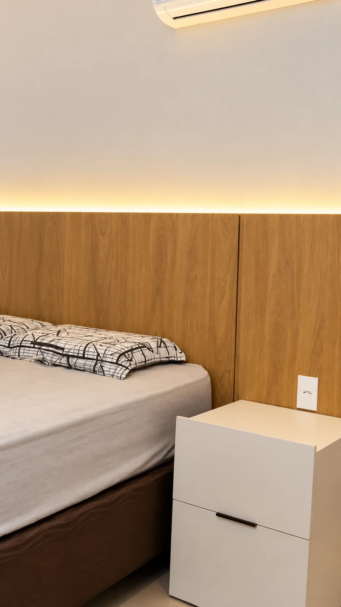
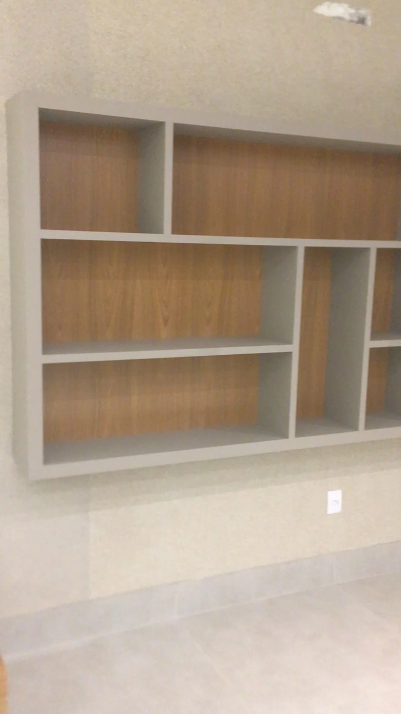
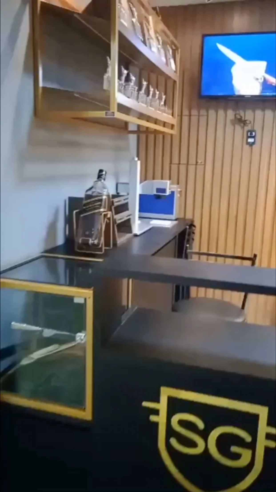
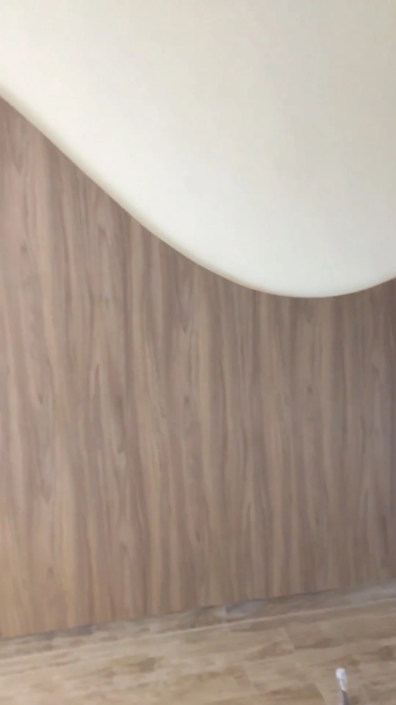
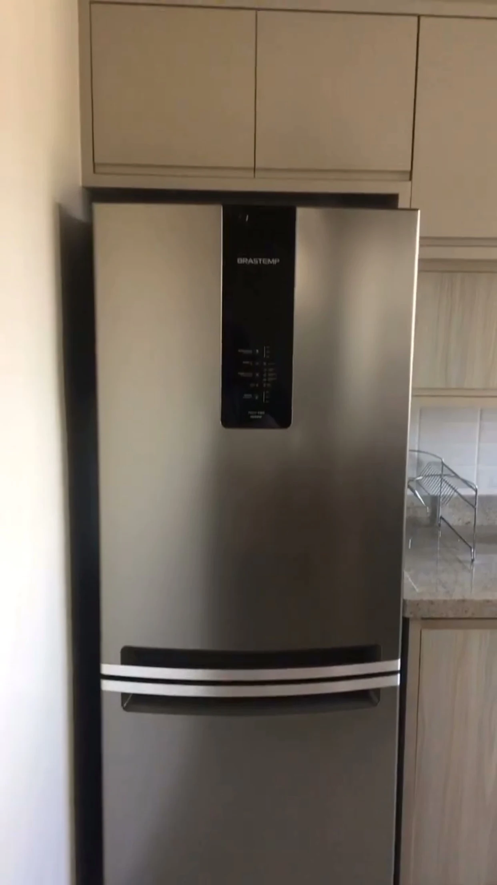

Goiânia, Goiás
Do painel
à bancada,
sob medida.

Painéis ripados, armários com espelho e bancadas planejadas. Veja os registros e escolha uma referência para o seu espaço.
Começar meu projeto Conheça nossos ambientesA Florarte
Um espaço para guardar.
Outro para aproveitar.
Rack ripado, portas espelhadas, bancada de estudo ou uma cabeceira iluminada. Aqui, cada referência mostra uma forma de aproveitar o ambiente.
A Florarte cria móveis planejados para residências e espaços comerciais em Goiânia, combinando as medidas do ambiente com as necessidades de quem o usa.
Nossos ambientes
Painéis, armários e ambientes.
Dez referências reais entre painéis,
armários e mobiliário comercial.

Painel e rack ripado
Painéis e salas

AmpliarArmários e bancada amadeirada
Armários e bancadasAmbientação com IAVer original


AmpliarPortas espelhadas e gaveteiro
Armários planejadosAmbientação com IAVer original


AmpliarEstante com nicho iluminado
Estantes e nichos

AmpliarBancada com armários suspensos
Bancadas sob medidaAmbientação com IAVer original


AmpliarCabeceira com luz indireta
QuartosAmbientação com IAVer original


AmpliarEstante suspensa com nichos
Estantes e organizaçãoFundo amadeirado e divisórias claras para expor e organizar sem ocupar o piso.


AmpliarBalcão comercial e painel ripado
Mobiliário comercialBalcão, prateleiras e painel ripado reunidos no mesmo espaço de atendimento.


AmpliarPainel amadeirado com curva
Painéis e acabamentoO acabamento amadeirado acompanha um recorte curvo no encontro com a parede clara.


AmpliarArmários acima da geladeira
Cozinhas e armáriosArmários altos aproveitam o espaço acima da geladeira e acompanham a linha da cozinha.
Mais ideias, detalhes e bastidores.
Ver no InstagramSob medida
Para o espaço
que você imagina.
Do ambiente de casa ao lugar de trabalho.
Residencial
Cozinhas, quartos, closets, salas e banheiros. Móveis pensados para as medidas e os usos de cada ambiente.
Home office
Bancadas, armários, prateleiras e soluções de organização para o seu espaço de trabalho.
Comercial
Balcões, estantes, vitrines e mobiliário personalizado para escritórios e salas comerciais.
Como você imagina seu ambiente?
Escolha o ambiente e conte um pouco da sua ideia. Seu pedido fica pronto para conversar com a Florarte.